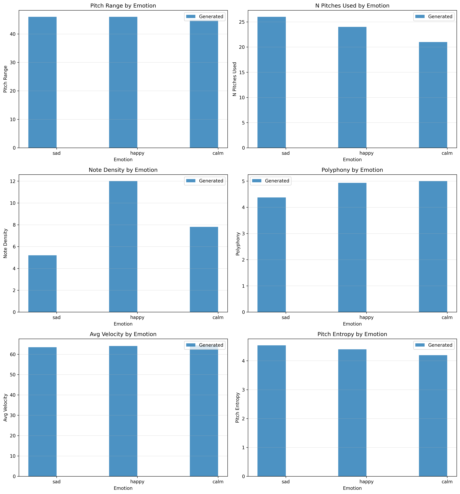

ACL 2026 Student Research Workshop
Controlling emotional expressions while creating symbolic music is still considered a huge problem. Most of the current methods have generated music of limited lengths or do not provide precise control over the generated piece's emotion. In the following text, we propose a hybrid approach that utilizes prompt tuning with a structured music generation process. To do this, we have trained prompt embeddings using a pre-trained SkyTNT model, keeping all base parameters frozen. We then use these learned prompt embeddings to generate music while using various constraints, increasing the music length from approximately 32 seconds to 148 seconds per piece. Our experiments, conducted using three different music pieces (sad, happy, and calm), have shown significant differentiation between each of them. Happy music had a note density of 12.0 notes per second, sad music had a note density of 5.21 notes per second, and calm music had a note density of 7.81 notes per second. We propose this work as a parameter-efficient prompt tuning application, which is currently gaining popularity in the natural language processing community, and discuss its benefits, as well as its limitations.
Our approach has three parts:
Below are the 64-bar generated pieces for each emotion, rendered from MIDI to audio.
| Metric | Sad | Happy | Calm |
|---|---|---|---|
| Note Density (notes/sec) | 5.21 | 12.00 | 7.81 |
| Avg Duration (s) | 0.81 | 0.40 | 0.64 |
| Pitch Range (semitones) | 46 | 46 | 45 |
| Unique Pitches | 26 | 24 | 21 |
| Polyphony | 4.38 | 4.93 | 5.00 |
| Pitch Entropy | 4.53 | 4.40 | 4.19 |
| Avg Velocity | 63.5 | 64.1 | 64.4 |
| Velocity Std Dev | 11.6 | 11.7 | 11.6 |
